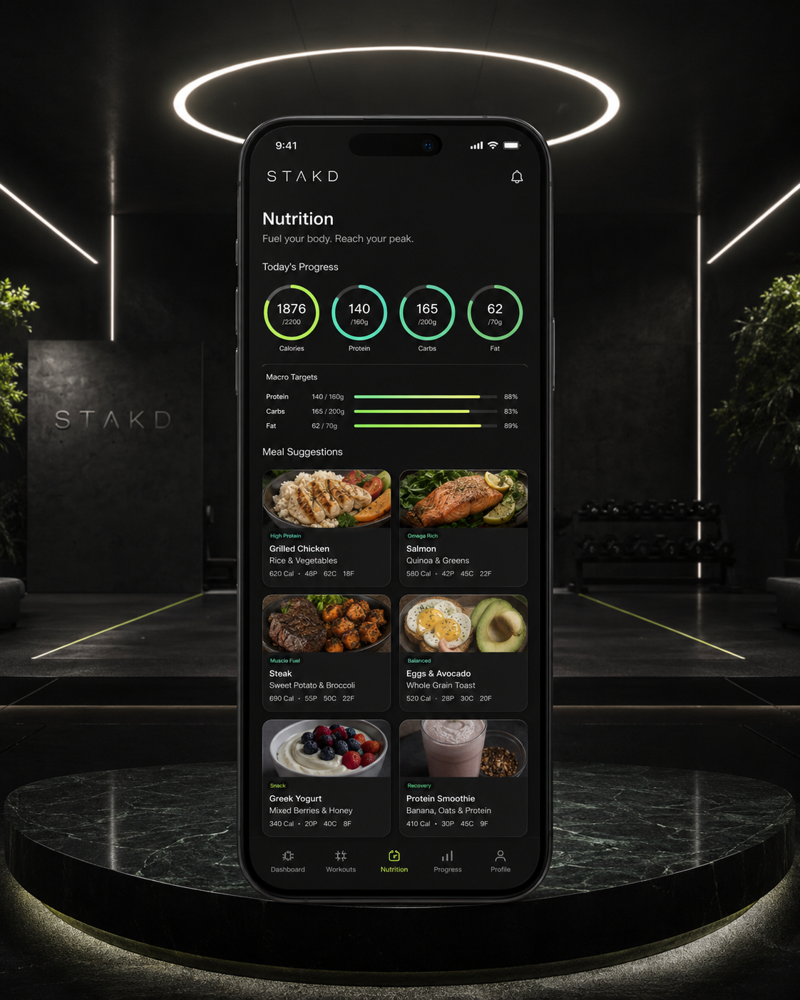

STAKD Food Tracker
Track food fast. Watch the macros move.
A clean, fun daily food tracker for calories, protein, carbs, and fat. Add an item, enter size in ounces, grams, servings, tablespoons, or each, then watch your daily goals update live.

Daily Goals
Set the targets. Log the food. Keep it easy.
Adjust the daily goals, add items by serving size, and use quick-add buttons for common STAKD foods.
Daily macro goals
0calories left
0protein left
0carbs left
0fat left
0of 2200 cal
STAKD Check: hit protein first, keep meals simple, and use the tracker to make the day visible.